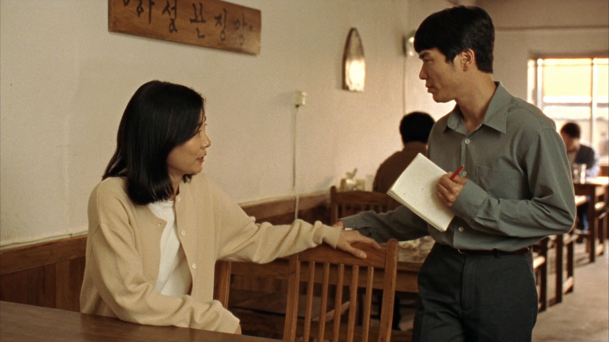
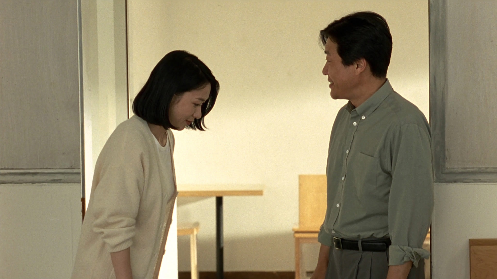
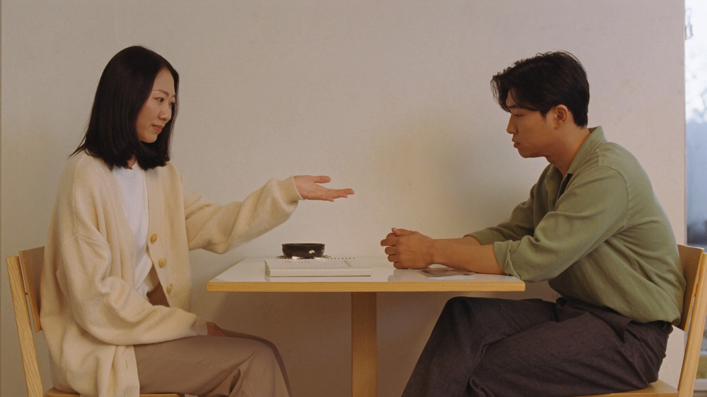

01 · 배려자리를 내어주는 마음
대화 밖에 있는 사람에게 빈자리를 내주며 말을 건넨다.
“MZ인데 사회성이 좋네.”
↓ 말을 걷어내면“나도 처음 온 날
아무도 말을 안 걸어줬거든요.”
첫 장면 · 움직이는 시안
말을 걷어내면, 사람이 보인다
작은 배려에 붙은 세대의 평가.
그 말을 걷어내고, 한 사람의 이유를 만나 보세요.
붙은 종이를 끌거나 탭하세요. 키보드로는 종이에 초점을 맞춘 뒤 Enter를 누르세요.
화면 크기

01 · 배려대화 밖에 있는 사람에게 빈자리를 내주며 말을 건넨다.
“MZ인데 사회성이 좋네.”
↓ 말을 걷어내면“나도 처음 온 날
아무도 말을 안 걸어줬거든요.”
첫 장면 · 움직이는 시안

02 · 인사처음 만난 사람과 눈을 맞추고 먼저 인사한다.
“요즘 사람 같지 않게
깍듯하네요.”
“처음 만나는 사이니까,
잘 만나고 싶었어요.”
스토리보드 · 영상 확장 예정

03 · 정중한 거절상대의 말을 듣고 차분하게 자기 사정을 전한다.
“요즘 사람 같지 않게
말을 참 예쁘게 하네.”
“내 시간을 지키면서도,
당신을 존중하고 싶었어요.”
스토리보드 · 영상 확장 예정
빈 의자를 내주는 작은 몸짓.
사람 위에 산호색 종이 한 조각.
드래그, 탭 또는 Enter.
종이 뒤에 남은 개인의 기억.
움직임과 여운은 약 15초. 종이를 걷기 전에는 관객을 기다립니다.